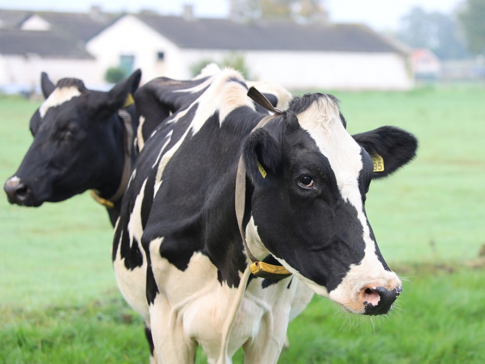
Leiteira
Holandesa (Holstein)
A campeã mundial em produção. Pelagem branca e preta (ou branca e vermelha), grande porte. Pode produzir mais de 30 litros de leite por dia.
Um guia ilustrado sobre o universo da pecuária leiteira: das vacas mansas no pasto à arte de transformar capim em leite.
A pecuária leiteira é uma das atividades agropecuárias mais antigas e relevantes da humanidade. O leite e seus derivados — queijos, iogurtes, manteigas e doces — fazem parte da alimentação diária de bilhões de pessoas e são fontes essenciais de cálcio, proteínas de alto valor biológico, vitaminas A, D e B12 e minerais.
O Brasil está entre os cinco maiores produtores mundiais de leite, com mais de 34 bilhões de litros produzidos por ano. A atividade envolve mais de um milhão de propriedades rurais, em sua maioria de agricultura familiar, gerando renda, emprego no campo e fixando o homem na terra.
Suas características principais são: a continuidade (ordenhas diárias, todos os dias do ano), a exigência de manejo cuidadoso, a importância da genética e da nutrição, e o forte vínculo entre o produtor e seus animais.
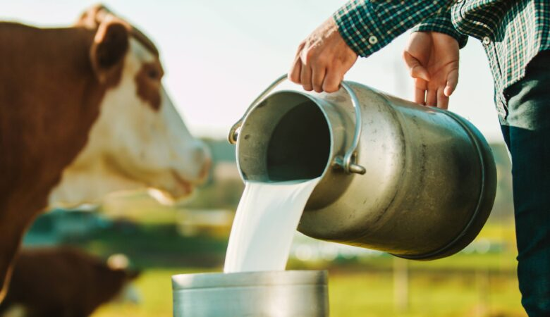
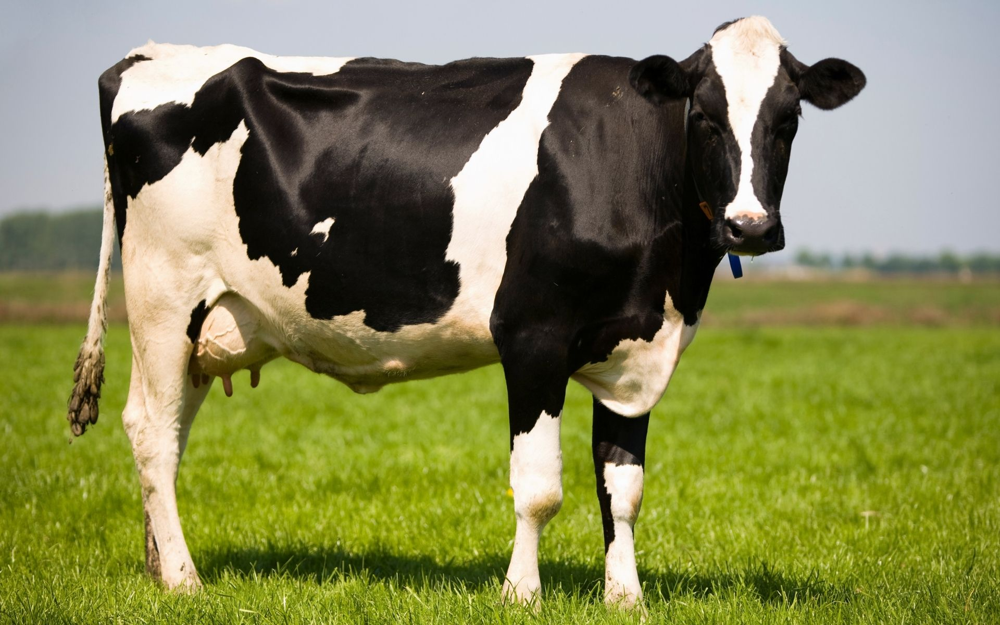
Uma vaca leiteira de qualidade combina genética, conformação física e saúde. Veja os principais pontos a observar:
Conhecer a anatomia da vaca é essencial para avaliar sua qualidade, identificar problemas de saúde e fazer um bom manejo. Veja 30 partes que todo desbravador precisa conhecer:
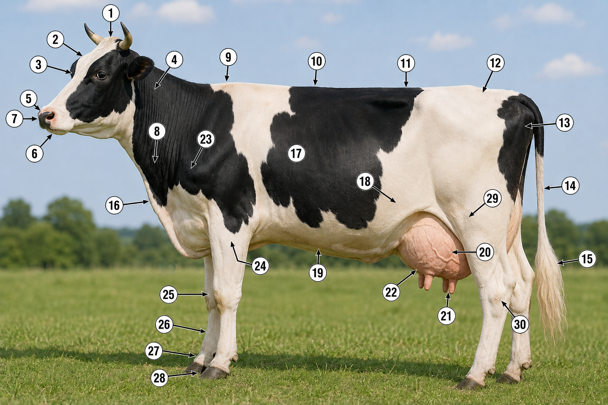

A campeã mundial em produção. Pelagem branca e preta (ou branca e vermelha), grande porte. Pode produzir mais de 30 litros de leite por dia.
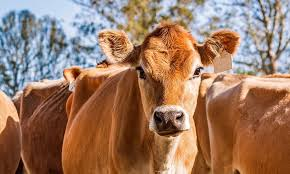
Pequena, dócil e rústica. Pelagem marrom-clara. Produz menos volume, mas com leite de altíssimo teor de gordura e proteína — ideal para queijos.
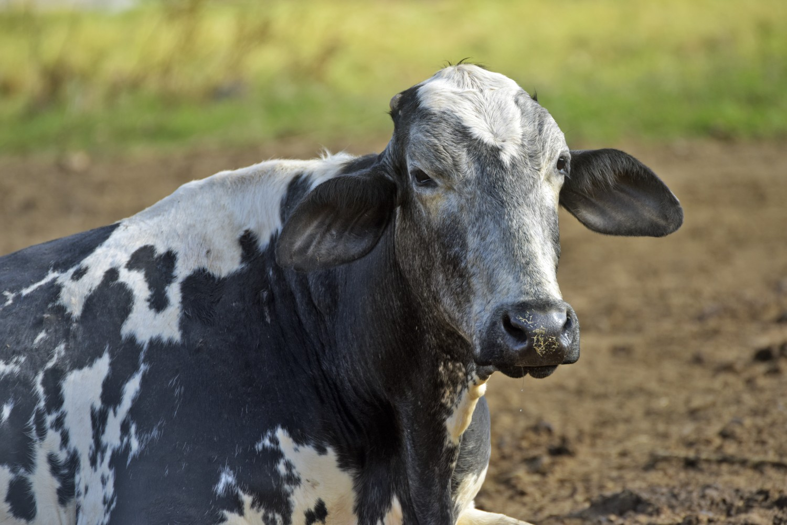
Cruzamento entre Gir e Holandesa. Muito popular no Brasil por unir a rusticidade tropical do Gir à alta produção da Holandesa.
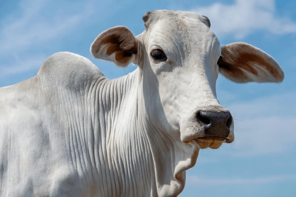
Origem indiana (zebuíno), pelagem branca e cupim no cernelha. Líder no rebanho brasileiro por sua rusticidade e adaptação ao clima tropical.
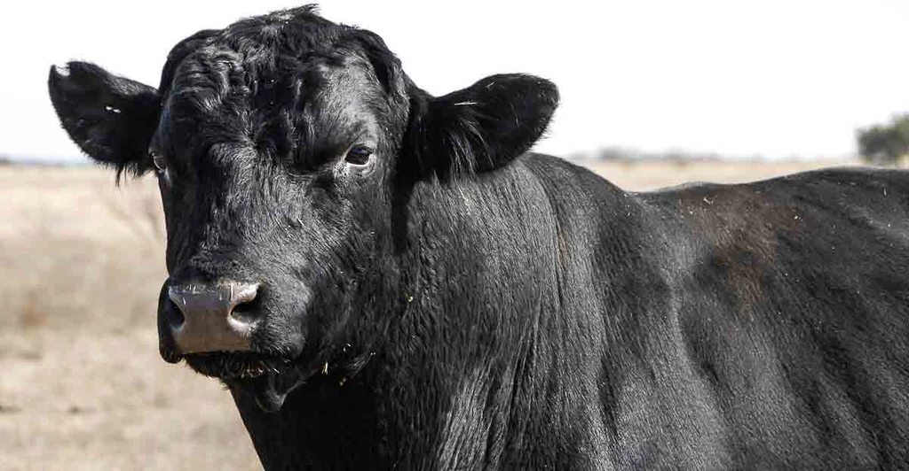
Originária da Escócia. Pelagem totalmente preta e sem chifres (mocho). Carne marmorizada de altíssima qualidade.
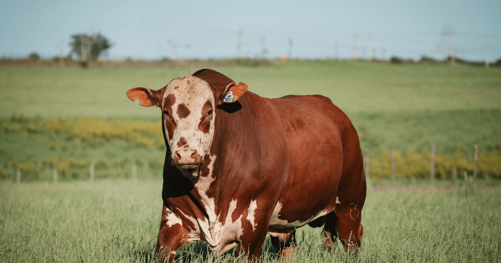
Inglesa, corpo vermelho e cabeça branca. Excelente ganho de peso em pasto e carne saborosa, muito criada no sul do Brasil.
Boas instalações garantem o bem-estar dos animais, facilitam o trabalho e melhoram a produção e a qualidade do leite. Devem ser construídas em local seco, alto, ventilado e de fácil acesso à água.
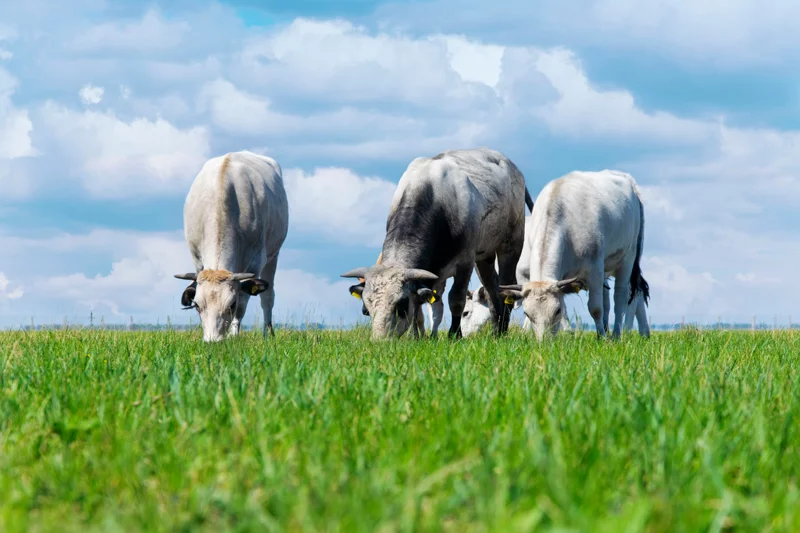
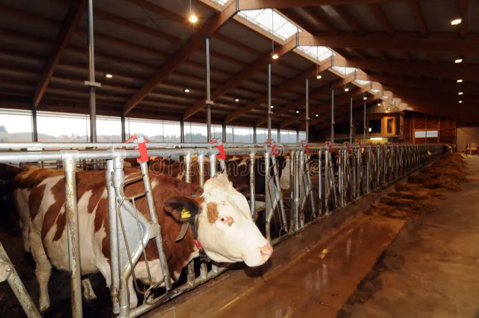
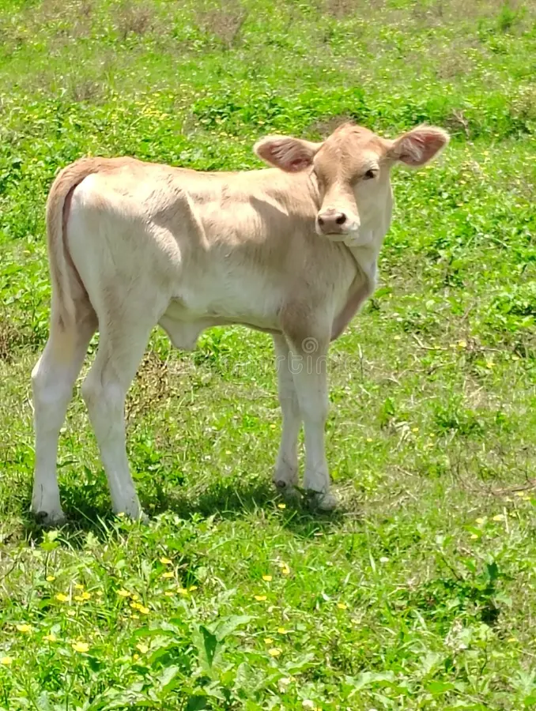
Uma vaca mansa é resultado de convivência diária, paciência e respeito. Tudo começa quando ela ainda é uma novilha (fêmea jovem que ainda não pariu).
Logo após o parto, secar bem o bezerro, desinfetar o umbigo com iodo a 10% e garantir que ele mame o colostro nas primeiras 6 horas (essencial para a imunidade). Manter em casinha individual, limpa e seca, com água, sal e ração inicial à vontade. Fornecer 4 a 6 litros de leite por dia.
O desmame ocorre por volta dos 60–90 dias, quando o bezerro já consome 1 a 1,5 kg de ração inicial por dia. Continuar com ração de qualidade, feno ou silagem, água limpa e mineralização. Fazer a primeira vacinação (clostridioses, raiva, brucelose nas fêmeas entre 3-8 meses) e vermifugar.
Fase de crescimento ósseo e muscular. Pasto de boa qualidade + suplementação com concentrado e sal mineral. Acompanhar o ganho de peso (média de 600–800 g/dia). Manter sanidade em dia: vacinas, vermifugação, controle de carrapatos e moscas.
A novilha está pronta para a primeira cobertura quando atinge cerca de 65–70% do peso adulto (geralmente 15–18 meses, ~330 kg). Inseminação artificial ou monta natural com touro selecionado. Acompanhamento veterinário e nutrição reforçada.
Após o parto começa a produção de leite. Alimentação reforçada com volumoso (capim, silagem) e concentrado proporcional à produção. Água limpa à vontade (uma vaca em lactação bebe 50 a 100 L/dia!). Ordenha duas vezes ao dia, com higiene rigorosa.
Dois meses antes do próximo parto, a vaca é "secada" — para de ser ordenhada. É o tempo de recuperação do úbere e do organismo, e do desenvolvimento final do bezerro. Aplicar antibiótico de vaca seca, manter boa nutrição e ambiente tranquilo.
O leite é fabricado dentro do úbere, uma glândula mamária formada por quatro quartos independentes, cada um com seu teto. Dentro deles existem milhões de pequenas estruturas chamadas alvéolos, onde o leite é produzido a partir do sangue.
Para cada litro de leite, passam pelo úbere cerca de 400 a 500 litros de sangue! As células dos alvéolos extraem do sangue água, açúcares (lactose), gorduras, proteínas (caseína), vitaminas e minerais, e os transformam em leite.
Quando o bezerro mama (ou na ordenha), estímulos nervosos chegam ao cérebro da vaca, que libera o hormônio ocitocina. Ela faz os alvéolos se contraírem e o leite "descer" pelos ductos até a cisterna do teto, de onde é retirado.
Traz nutrientes ao úbere
Sintetizam o leite
Hormônio da descida
Armazena no teto
Retira o leite
A ordenha — manual ou mecânica — segue uma rotina higiênica e tranquila, sempre nos mesmos horários (geralmente duas vezes ao dia, com 12 horas de intervalo).
Conduzir com calma até a sala de ordenha. Ambiente limpo e silencioso.
Água limpa e papel-toalha descartável (um por vaca).
Mergulhar os tetos em solução desinfetante e secar.
Os 3 primeiros jatos em caneca de fundo escuro para detectar mastite.
Manual ou com ordenhadeira mecânica, esvaziando completamente o úbere.
Novo mergulho dos tetos em desinfetante para fechar o canal.
Filtrar o leite e levar imediatamente ao tanque (≤ 4 °C).
Higienizar utensílios, ordenhadeira e sala após cada ordenha.
Realizada com as mãos. As mãos devem estar limpas, secas e com unhas curtas. Sentar-se ao lado direito da vaca, prender a cauda e usar um balde fundo limpo.
Mais rápida, higiênica e menos cansativa. Permite ordenhar muitas vacas em pouco tempo.
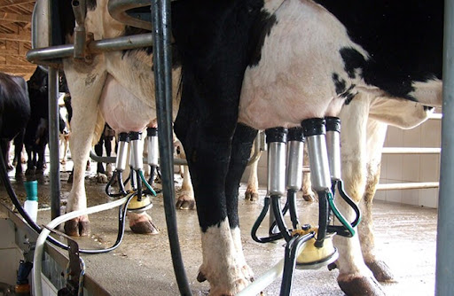
A mastite é a inflamação da glândula mamária (úbere), geralmente causada por bactérias que entram pelo canal do teto. É a doença que mais prejuízo causa à pecuária leiteira: reduz a produção, diminui a qualidade do leite e pode até inutilizar um quarto do úbere.
| Doença | Sintomas e sinais | Prevenção / Tratamento |
|---|---|---|
| Febre Aftosa | Febre, salivação intensa, vesículas na boca, língua, tetos e cascos; perda de peso. | Vacinação obrigatória; isolamento; notificação oficial. |
| Brucelose | Aborto no terço final da gestação, retenção de placenta, infertilidade. Zoonose grave. | Vacinação de fêmeas (B19) entre 3 e 8 meses; descarte de positivos; teste regular. |
| Tuberculose | Emagrecimento, tosse crônica, queda de produção. Zoonose. | Teste tuberculínico anual; sacrifício sanitário; pasteurização do leite. |
| Carbúnculo sintomático (manqueira) | Febre alta, claudicação, edema com crepitação na musculatura, morte rápida. | Vacinação contra clostridioses dos 4 aos 8 meses, com reforço. |
| Raiva bovina | Mudanças de comportamento, paralisia, salivação, andar cambaleante. Fatal. | Vacinação anual; controle de morcegos hematófagos. |
| Verminose | Pelo arrepiado, diarreia, anemia, atraso de crescimento. | Vermifugação estratégica; rotação de pastagens. |
| Tristeza parasitária bovina | Febre, urina escura, anemia, icterícia. Transmitida por carrapatos. | Controle de carrapatos; tratamento com babesicidas. |
| Cetose | Falta de apetite, queda brusca de produção, hálito adocicado em vacas recém-paridas. | Boa nutrição no pré e pós-parto; propilenoglicol; glicose. |
| Febre do leite (hipocalcemia) | Vaca caída logo após o parto, fraqueza muscular, hipotermia. | Manejo nutricional pré-parto; aplicação de cálcio endovenoso. |
| Timpanismo (empanzinamento) | Inchaço do flanco esquerdo, dificuldade respiratória. | Evitar pastagens muito tenras em jejum; sonda esofágica em emergências. |
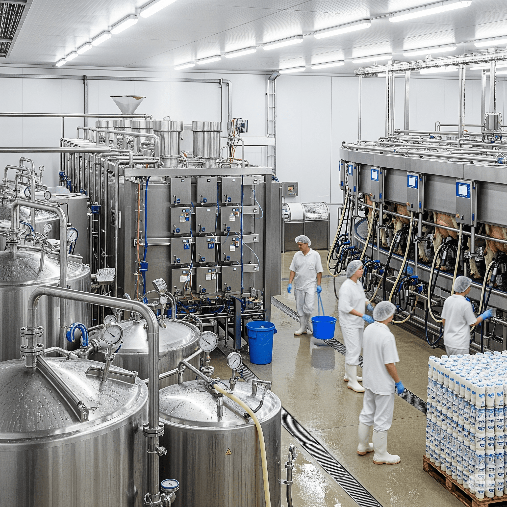
A pasteurização é um tratamento térmico criado por Louis Pasteur que destrói os micro-organismos patogênicos do leite (como os causadores de tuberculose, brucelose e salmonela), preservando ao máximo seu sabor e nutrientes.
Uma vaca pode mastigar mais de 40.000 vezes por dia ruminando! Ela passa cerca de 8 horas comendo e outras 8 ruminando.
Os bovinos têm um estômago dividido em quatro câmaras: rúmen, retículo, omaso e abomaso. O rúmen sozinho cabem 200 litros.
Vacas reconhecem rostos humanos, fazem amizade com outras vacas e ficam estressadas quando separadas de suas "melhores amigas".
Estudos mostram que vacas ouvindo música calma produzem até 3% a mais de leite. Elas gostam de clássica e country!
A vaca Smurf, do Canadá, produziu mais de 216 mil litros de leite em sua vida — equivalente a uma piscina!
Não existem duas vacas malhadas exatamente iguais. As manchas são como impressões digitais — únicas para cada animal.
Coloque a mão na massa: auxilie no cuidado e ordenha de um rebanho por pelo menos 3 meses e visitar uma propriedade leiteira para elaborar um relatório.
Seu relatório deve mostrar como a teoria desta especialidade aparece na prática do dia a dia da fazenda.
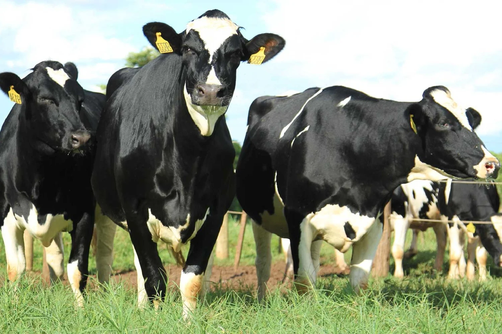
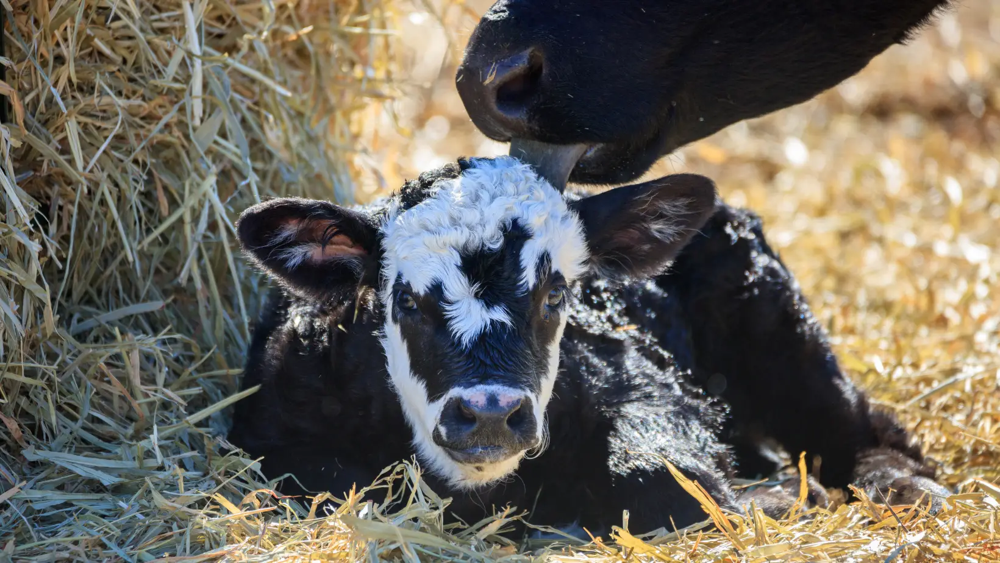
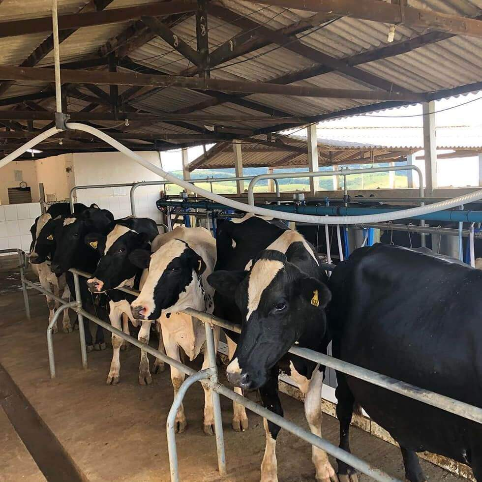